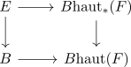

classification theorem for serre fibrations
Proposition
Let $p: E \rightarrow B$ be a serre fibration with fibre $F$ of a pointed locally regular compact connected CW-Complex Then there exists a homotopy pullback diagram

Proof
a)
some form of